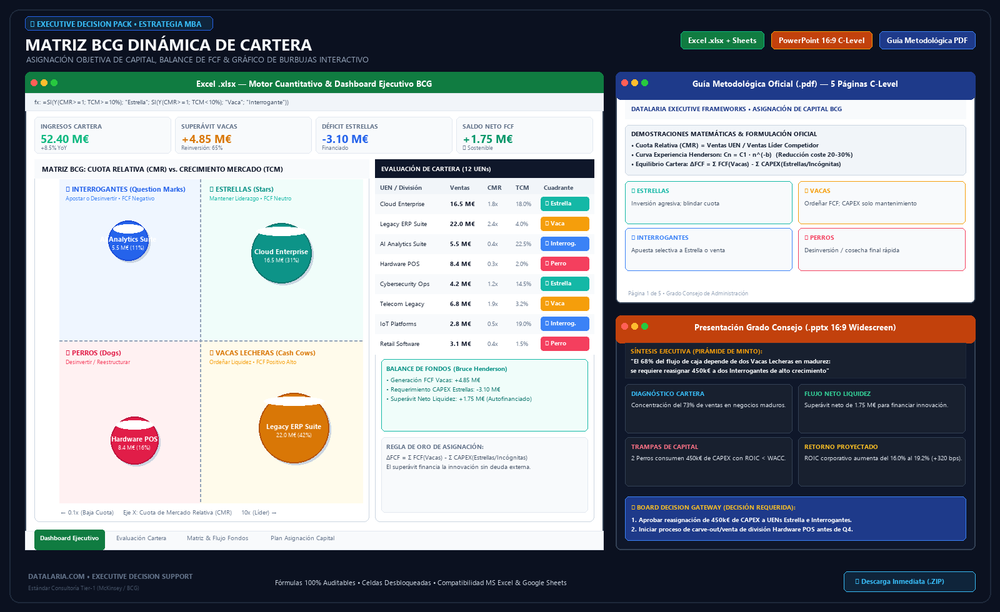

En casi cualquier retiro anual de planificación estratégica, reunión ordinaria de Consejo de Administración o comité de fusiones y adquisiciones (M&A) se proyecta invariablemente una diapositiva con cuatro cuadrantes canónicos: Estrellas, Vacas Lecheras, Interrogantes y Perros.
Sin embargo, en más del 80% de las corporaciones, este ejercicio estratégico se degrada en una caricatura visual conocida en la consultoría de alta dirección como el “Síndrome del Dibujo Estático”:
- Confusión Letal entre Cuota Absoluta y Cuota Relativa ($\text{CMR}$): Un comité clasifica complacientemente una división como “líder de mercado” porque ostenta un 28% de cuota sectorial. Sin embargo, si el competidor número uno acapara el 56%, la cuota relativa de la compañía es de apenas $0.50\times$. En la economía real de costes, una posición de $0.50\times$ significa que el competidor disfruta del doble de producción acumulada y costes unitarios sustancialmente más bajos debido a la Curva de Experiencia, situando a la división propia en una desventaja estructural insostenible.
- Desconexión con el Flujo de Caja Libre ($\text{FCF}$) y el Balance: La Matriz BCG original concebida por Bruce Henderson en 1968 nunca fue una herramienta cualitativa de marketing o clasificación de marcas; fue un modelo matemático de balance de liquidez y transferencia de capital. Tratar las unidades sin calcular su generación neta de efectivo ($\text{FCF}$) ni sus requerimientos de reinversión en capital circulante y activos fijos convierte el ejercicio en retórica vacía.
- La Trampa de los “Perros” con Beneficio Contable Marginal: Muchas compañías toleran la supervivencia indefinida de divisiones clasificadas como Perros simplemente porque arrojan un beneficio contable o margen EBITDA marginal positivo (ej: un 4% sobre ventas). La alta dirección pasa por alto el coste de oportunidad del capital: el retorno sobre el capital invertido ($\text{ROIC}$) de esa unidad es inferior al coste ponderado del capital ($\text{WACC}$), lo que significa que cada euro retenido en esa línea destruye activamente valor patrimonial para los accionistas.
Para convertir la Matriz BCG en una herramienta prescriptiva de grado Consejo de Administración (C-Level), es imprescindible formalizar el análisis mediante un motor cuantitativo cartesiano de Cuota de Mercado Relativa ($\text{CMR}$) vs. Tasa de Crecimiento del Mercado ($\text{TCM}$), modelar el balance de liquidez de Bruce Henderson, proyectar un gráfico de burbujas escalado por facturación y estructurar un roadmap de capital bajo la Pirámide de Minto.
Facturación propia, ventas del líder competidor y tasa de crecimiento sectorial"] B["2. Motor Matemático Cartesiano: Vectores (CMR, TCM)
Cálculo estricto: CMR = Vi / Vlíder y asignación objetiva a los 4 cuadrantes"] C["3. Dinámica de Fondos de Henderson: Balance Neto de FCF
Extracción de superávit en Vacas y cuantificación del déficit en Interrogantes"] D["4. Filtro de Asignación de Capital: Regla de Concentración
Decisión binaria en Interrogantes, inversión en Estrellas y desinversión en Perros"] E["5. Última Milla Ejecutiva: Board Decision Gateway (Minto)
Deck PPTX 16:9, reasignación presupuestaria Q1-Q4 y resoluciones formales"] A --> B B --> C C --> D D --> E style A fill:#F8FAFC,stroke:#94A3B8,stroke-width:1.5px,color:#0F172A style B fill:#EFF6FF,stroke:#3B82F6,stroke-width:1.5px,color:#1E3A8A style C fill:#F0FDFA,stroke:#0D9488,stroke-width:1.5px,color:#0F766E style D fill:#FFFBEB,stroke:#F59E0B,stroke-width:1.5px,color:#92400E style E fill:#0F172A,stroke:#D97706,stroke-width:2px,color:#FFFFFF
🔍 Haz clic en el diagrama para ampliarlo a pantalla completa
Executive Decision Pack: Matriz BCG Dinámica & Asignación de Capital
1. ¿Qué es la Matriz BCG? Fundamentos, Dinámica de Cartera y Objetivos
Para cualquier consejero delegado (CEO), director financiero (CFO), socio de private equity o consultor de estrategia corporativa que deba optimizar el rendimiento global de un grupo empresarial multiproducto—o para quien se aproxime por primera vez a esta metodología—, la Matriz BCG (desarrollada originalmente por Bruce D. Henderson en 1968 y consolidada en sus ensayos fundacionales de 1970 para Boston Consulting Group) constituye el marco canónico para la gestión de carteras corporativas y la asignación estratégica de capital.
A diferencia de los marcos de diagnóstico puramente cualitativo o centrados en una única línea de negocio, la Matriz BCG parte de un principio económico incontestable: en una corporación diversificada, no todas las unidades de negocio se encuentran en la misma fase vital ni deben gestionarse bajo idénticos objetivos financieros. Tratar a una unidad emergente en un sector en rápida expansión con las mismas exigencias de reparto de dividendos que a un negocio maduro y consolidado estrangula el crecimiento futuro de la empresa; del mismo modo, permitir que negocios maduros retengan y reinviertan sus flujos de caja en sectores estancados destruye sistemáticamente el valor del capital corporativo.
La Anatomía del Modelo: Los 4 Cuadrantes Estratégicos de Cartera
El modelo clasifica todas las Unidades Estratégicas de Negocio (UENs) de una corporación en una matriz bidimensional cartesiana que cruza dos variables fundamentales: la Cuota de Mercado Relativa ($\text{CMR}$) en el eje horizontal y la Tasa de Crecimiento del Mercado ($\text{TCM}$) en el eje vertical. De este cruce matemático emergen los cuatro cuadrantes canónicos:
| Cuadrante BCG | Posición Relativa ($\text{CMR}$ / $\text{TCM}$) | Mecánica de Flujos y Liquidez | Generación de Efectivo vs. Necesidades de Reinversión | Mandato Estratégico C-Level | Ejemplo Empresarial Típico |
|---|---|---|---|---|---|
| ⭐ ESTRELLAS (Stars) | Alta $\text{CMR}$ ($\ge 1.0\times$) Alto Crecimiento ($\ge 10\%$) |
Negocio líder en sector en auge. Disfruta de altos márgenes por economías de escala, pero requiere reinversión masiva para sostener cuota. | Generación alta • Reinversión alta Flujo Libre de Caja ($\text{FCF}$) neutral o levemente positivo. |
Invertir agresivamente: Financiar capacidad, expansión comercial e I+D para blindar el liderazgo antes de que el mercado madure. | Plataformas SaaS en hipercrecimiento con posición de liderazgo o robótica autónoma avanzada. |
| 🐄 VACAS LECHERAS (Cash Cows) | Alta $\text{CMR}$ ($\ge 1.0\times$) Bajo Crecimiento ($< 10\%$) |
Líder en costes en mercado maduro o de crecimiento vegetativo. Genera flujos de caja muy superiores a sus necesidades de reinversión fabril. | Generación máxima • Reinversión mínima Superávit estructural masivo de liquidez ($\text{FCF} \gg 0$). |
Ordeñar con disciplina: Congelar CAPEX expansivo, limitar inversiones al mantenimiento básico y transferir el excedente al holding. | Sistemas hidráulicos tradicionales, bebidas carbonatadas consolidadas o motores industriales clásicos. |
| ❓ INTERROGANTES (Question Marks) | Baja $\text{CMR}$ ($< 1.0\times$) Alto Crecimiento ($\ge 10\%$) |
Operador seguidor en sector en expansión rápida. Sufre desventaja de costes frente al líder y consume grandes sumas de efectivo para no perder paso. | Generación baja • Reinversión masiva Déficit severo y continuo de caja libre ($\text{FCF} \ll 0$). |
Decisión binaria estricta: Inyectar capital concentrado de las Vacas para alcanzar $\text{CMR} \ge 1.0\times$ o desinvertir/cerrar sin dilación. | Celdas de baterías de estado sólido compitiendo contra gigantes asiáticos consolidados. |
| 🐕 PERROS (Dogs) | Baja $\text{CMR}$ ($< 1.0\times$) Bajo Crecimiento ($< 10\%$) |
Baja cuota en sector estancado o en contracción. Márgenes deprimidos y capital circulante atrapado en líneas con retorno inferior al coste de capital. | Generación débil • Reinversión baja Flujo de caja neto neutro o drenaje crónico de tesorería. |
Cosechar o desinvertir (M&A): Venta a competidores consolidadores, liquidación ordenada y liberación de circulante para Estrellas. | Componentes analógicos obsoletos o arneses de cableado convencional sin diferenciación. |
Cómo Funciona: El Embudo de Planificación Estratégica Completo (PESTEL → Porter → DAFO-CAME → Matriz BCG)
Para los directivos que utilizan los marcos de Datalaria en su toma de decisiones, es vital entender el lugar que ocupa la Matriz BCG dentro del ciclo integral de dirección estratégica. En la metodología de las firmas de consultoría Tier-1 (McKinsey, BCG, Bain), la formulación de la estrategia no recurre a herramientas aisladas, sino a un embudo estructurado de cuatro fases secuenciales:
Matriz PESTEL Cuantitativa
Severidad vs. Volatilidad de riesgos políticos, macro y tecnológicos"] M2["Nivel 2: Microentorno Sectorial
5 Fuerzas de Porter Ponderadas
Atractivo estructural de industria, rivalidad y foso defensivo (Economic Moat)"] M3["Nivel 3: Diagnóstico Interno & Cruce
DAFO Cuantitativo & Matriz CAME
Alineación de fortalezas/debilidades con oportunidades/amenazas"] M4["Nivel 4: Gestión de Cartera & Finanzas
Matriz BCG Dinámica de Cartera
Balance de liquidez Henderson, curva de experiencia y asignación de capital"] M1 --> M2 M2 --> M3 M3 --> M4 style M1 fill:#EFF6FF,stroke:#3B82F6,stroke-width:1.5px,color:#1E3A8A style M2 fill:#EEF2FF,stroke:#6366F1,stroke-width:1.5px,color:#312E81 style M3 fill:#ECFDF5,stroke:#10B981,stroke-width:1.5px,color:#064E3B style M4 fill:#0F172A,stroke:#D97706,stroke-width:2.5px,color:#FFFFFF
🔍 Haz clic en el diagrama para ampliarlo a pantalla completa
- Nivel 1 — Escaneo del Macroentorno Exógeno (Matriz PESTEL Cuantitativa): Proporciona el radar de amplio alcance. Mide el impacto en P&L de discontinuidades regulatorias, shocks energéticos, volatilidad de tipos de interés y tendencias demográficas. Si necesitas evaluar la hostilidad macro de tu entorno, consulta nuestra guía sobre la Matriz PESTEL Cuantitativa.
- Nivel 2 — Análisis Estructural del Sector (5 Fuerzas de Porter Ponderadas y Atractivo de Industria): Aterriza en la dinámica competitiva de cada vertical. Determina el poder de negociación de clientes y proveedores, las barreras de entrada y el atractivo estructural ($\text{ROIC} - \text{WACC}$). Puedes profundizar en este análisis en nuestra guía de las 5 Fuerzas de Porter Ponderadas y Atractivo de Industria.
- Nivel 3 — Diagnóstico Situacional y Posición Estratégica (DAFO Cuantitativo y Matriz CAME): Sintetiza las amenazas y oportunidades externas identificadas en PESTEL y Porter con las fortalezas y debilidades internas operativas, fijando el vector de postura corporativa y las iniciativas de ejecución inmediata en la Matriz CAME. Descubre los detalles en nuestra guía del DAFO Cuantitativo y Matriz CAME.
- Nivel 4 — Asignación de Capital y Dinámica de Cartera (Matriz BCG Dinámica): Es la cúspide de la toma de decisiones financieras corporativas. Una corporación que compite en múltiples sectores con diversas UENs necesita responder a la pregunta definitiva del Consejo: ¿de dónde sale la liquidez y hacia dónde debe transferirse para maximizar el valor patrimonial del grupo a largo plazo? La Matriz BCG toma las conclusiones de los niveles anteriores y orquesta el flujo de capital: las Vacas Lecheras (con fosos sólidos según Porter) transfieren sus excedentes hacia las Interrogantes seleccionadas que atacan las oportunidades detectadas en el DAFO.
¿Cuál es el Objetivo Principal de la Matriz BCG?
El propósito primordial de una Matriz BCG rigurosa no es elaborar una presentación estética de marketing, sino asegurar la solvencia, la reposición generacional de negocios y la maximización del Retorno sobre el Capital Invertido ($\text{ROIC}$) del grupo corporativo. Ante un Consejo de Administración, la herramienta debe resolver tres interrogantes ineludibles:
- ¿Dispone la corporación de suficiente superávit de efectivo en sus negocios maduros (Vacas) para financiar el crecimiento de sus divisiones de futuro sin sobreapalancar el balance con deuda bancaria?
- De todas las divisiones en sectores de alto crecimiento con baja cuota (Interrogantes), ¿en cuál de ellas debe concentrarse el capital de forma selectiva para garantizar que supere al líder ($\text{CMR} \ge 1.0\times$), y cuáles deben venderse o liquidarse inmediatamente?
- ¿Qué volumen de capital circulante y activos fijos está atrapado en divisiones en declive (Perros) destruyendo valor económico frente al coste medio ponderado del capital ($\text{WACC}$)?
Resultados Esperados: ¿Qué debe arrojar una Matriz BCG Eficaz?
Cuando la Matriz BCG se implementa bajo el estándar cuantitativo de Datalaria, la alta dirección obtiene tres entregables ejecutivos verificables:
- Gráfico de Burbujas Cartesiano ($\text{CMR}$ vs. $\text{TCM}$) Escalado por Facturación: Un mapa objetivo de la cartera donde cada burbuja representa una UEN con tamaño proporcional a sus ventas y coordenadas matemáticas auditables, eliminando debates subjetivos sobre el posicionamiento de cada negocio.
- Modelo de Balance de Fondos de Bruce Henderson ($\text{BNF}$): Un balance cuantitativo de tesorería que audita si la cartera genera un superávit neto de liquidez o si sufre un déficit estructural que amenaza la continuidad del plan de negocio.
- Plan de Reasignación de Capital y Desinversión C-Level: Una hoja de ruta presupuestaria concreta con asignación de CAPEX por unidad, identificación de activos a desinvertir vía M&A, propietarios estatutarios (C-Suite Owners), cronograma trimestral Q1-Q4 y proyección del incremento en ROIC corporativo.
2. La Falacia de la Matriz BCG Cualitativa y el Síndrome del Dibujo Estático
Desarrollada por Bruce D. Henderson en Boston Consulting Group, la Matriz de Crecimiento-Cuota resolvió un dilema corporativo universal: cómo debe una gran corporación diversificada asignar su capital entre múltiples unidades de negocio con tasas de crecimiento y necesidades de inversión radicalmente distintas.
No obstante, en la praxis corporativa contemporánea, su aplicación ha sufrido tres desviaciones metodológicas severas:
2.1. La Paradoja de la Cuota Absoluta
En los comités de dirección es habitual escuchar expresiones como: “Nuestra división química es líder porque tiene un 22% del mercado”. Si el mercado está fragmentado y el segundo operador posee un 8%, la compañía disfruta ciertamente de una ventaja competitiva ($\text{CMR} = 2.75\times$). Pero si el mercado cuenta con un competidor global con un 66% de cuota, la división de la empresa es en realidad un competidor marginal ($\text{CMR} = 0.33\times$).
La rentabilidad del negocio no depende del porcentaje abstracto sobre el total del mercado, sino de la ventaja de escala frente al rival más eficiente. Como demostró Henderson, los costes de producción se reducen con el volumen acumulado propio en comparación con el del competidor dominante, no con el volumen del mercado agregado.
2.2. La Dispersión Crónica de Capital en Interrogantes
Cuando una empresa carece de un modelo dinámico de liquidez, cae en la trampa de la “democracia presupuestaria”: asignar aumentos homogéneos de CAPEX (ej: +5% anual) a todas las divisiones por igual. Las unidades clasificadas como Interrogantes (Question Marks) operan en sectores de rápido crecimiento pero con baja cuota relativa. Estas unidades son pozos sin fondo de liquidez: requieren ingentes sumas de efectivo para financiar fábricas, redes de ventas e inventario, pero generan muy poco flujo propio debido a sus márgenes reducidos por falta de escala.
Repartir el capital entre cuatro o cinco Interrogantes a la vez garantiza que ninguna de ellas acumule la masa crítica necesaria para superar al líder del mercado ($\text{CMR} \ge 1.0\times$). El resultado es la pérdida del capital y la degradación de todas las interrogantes hacia la categoría de Perros.
2.3. La Brecha de la “Última Milla Ejecutiva”
Un análisis estratégico de cartera que concluye con un gráfico estático de PowerPoint sin vincularse al balance, a la tesorería corporativa y a la rentabilidad sobre el capital invertido ($\text{ROIC}$) resulta estéril para un Consejo de Administración. La alta dirección exige resolver tres cuestiones perentorias:
- ¿Cuál es el superávit neto de liquidez en euros que las Vacas Lecheras deben remitir a la matriz durante el ejercicio presupuestario?
- ¿Qué UEN clasificada como Interrogante cuenta con una probabilidad matemática verificable de superar el umbral $\text{CMR} \ge 1.0\times$ mediante una inyección concentrada de capital?
- ¿Qué activos fijos y capital circulante neto atrapados en unidades Perro deben liquidarse antes de Q3 para blindar el balance del grupo?
3. Fundamentación Matemática: Dinámica de Cartera, Cuota Relativa y Curva de Experiencia
Para dotar al análisis de rigor auditable de estándar Tier-1 (McKinsey / BCG), cada Unidad Estratégica de Negocio (UEN) se formaliza mediante un vector matemático bidimensional proyectado sobre el espacio cartesiano de crecimiento y cuota:
🔍 Haz clic en el diagrama para ampliarlo a pantalla completa
3.1. Ecuación de la Cuota de Mercado Relativa ($\text{CMR}_i$)
La Cuota de Mercado Relativa es la métrica rectora del eje horizontal. A diferencia de la cuota absoluta, mide la posición de la UEN en relación directa con el operador de mayor tamaño del mercado:
$$\text{CMR}_i = \frac{V_i}{V_{\text{líder}, i}}$$Donde:
- $V_i$: Facturación o volumen de ventas anuales de la UEN evaluada $i$.
- $V_{\text{líder}, i}$: Facturación del competidor número uno en ese segmento específico.
- Regla de Inversión para el Líder de Mercado: Si la UEN propia es la número uno del sector, su cuota relativa se calcula respecto al segundo competidor más grande ($\text{CMR}_i = V_i / V_{\text{segundo}, i}$). En este caso, la $\text{CMR}$ es estrictamente superior a $1.00\times$.
El Umbral de Corte Canónico: Se establece de forma universal en $\text{CMR}_{\text{corte}} = 1.00\times$. Una $\text{CMR} \ge 1.00\times$ indica liderazgo en cuota y, por consiguiente, el menor coste unitario de la industria. Una $\text{CMR} < 1.00\times$ sitúa a la unidad en desventaja estructural de costes.
3.2. Ecuación de la Tasa de Crecimiento del Mercado ($\text{TCM}_i$)
El eje vertical mide la tasa anualizada a la que se expande el volumen total de transacciones del sector en el que compite la UEN:
$$\text{TCM}_i = \left( \frac{M_{i, t} - M_{i, t-1}}{M_{i, t-1}} \right) \times 100\%$$Donde $M_{i, t}$ representa el volumen total del mercado relevante en el año $t$.
El Umbral de Corte Canónico: Se sitúa convencionalmente en $\text{TCM}_{\text{corte}} = 10.0\%$ anual (o en la tasa de crecimiento media del PIB nominal más la inflación sectorial). Una tasa $\ge 10.0\%$ denota un mercado expansivo que exige importantes inyecciones de capital para financiar el crecimiento de activos y circulante. Una tasa $< 10.0\%$ corresponde a un mercado maduro o estancado con bajas exigencias de reinversión fabril.
3.3. Efecto Curva de Experiencia de Henderson
La justificación económica que vincula la Cuota de Mercado Relativa con la rentabilidad financiera es la Curva de Experiencia formulada empíricamente por BCG en 1968:
$$C_n = C_1 \cdot n^{-b}$$Donde:
- $C_n$: Coste unitario real de valor añadido tras haber producido la unidad acumulada $n$.
- $C_1$: Coste unitario de la primera unidad producida.
- $n$: Producción acumulada total a lo largo de la historia de la compañía.
- $b$: Coeficiente de elasticidad del aprendizaje ($b > 0$).
El coeficiente $b$ se deriva directamente de la Tasa de Progreso o Aprendizaje ($\text{PR}$) del sector (típicamente entre el 70% y el 80% en manufactura avanzada, automoción, robótica y software):
$$b = -\frac{\ln(\text{PR})}{\ln(2)}$$Para una tasa de aprendizaje del 80% ($\text{PR} = 0.80$), $b = -\ln(0.80)/\ln(2) \approx 0.322$. Esto implica matemáticamente que cada vez que el volumen acumulado de producción se duplica, el coste unitario directo disminuye un 20% en términos reales.
Dado que la UEN con mayor Cuota de Mercado Relativa ($\text{CMR} \ge 1.0\times$) produce a un ritmo superior al de todos sus rivales, acumula experiencia y volumen mucho más rápido. En consecuencia, opera en el punto más bajo de la curva de costes unitarios, disfrutando de márgenes brutos y márgenes EBITDA estructuralmente superiores a los de cualquier competidor seguidor.
3.4. La Ecuación del Flujo de Caja Libre Neto ($\text{FCF}$)
El balance de fondos de cada cuadrante está condicionado por la fórmula estándar del Flujo Libre de Caja:
$$\text{FCF}_i = \text{EBITDA}_i \cdot (1 - t) - \Delta \text{NWC}_i - \text{CAPEX}_{\text{mantenimiento}, i} - \text{CAPEX}_{\text{crecimiento}, i}$$- En mercados de alto crecimiento ($\text{TCM} \ge 10\%$), $\text{CAPEX}_{\text{crecimiento}}$ y el capital circulante ($\Delta \text{NWC}$) son masivos para sostener inventarios y nuevas líneas de ensamblaje.
- En mercados de bajo crecimiento ($\text{TCM} < 10\%$), $\text{CAPEX}_{\text{crecimiento}} \approx 0$, y el capital circulante permanece estable ($\Delta \text{NWC} \approx 0$).
4. Las Reglas de Oro de Asignación de Capital de Bruce Henderson
La aportación fundamental de Henderson fue demostrar que los cuatro cuadrantes de la matriz no son compartimentos estancos, sino etapas interconectadas de un ciclo vital corporativo gobernado por transferencias de liquidez.
| Cuadrante BCG | Cuota Relativa ($\text{CMR}$) | Crecimiento Mercado ($\text{TCM}$) | Generación Bruta de Caja | Requerimientos de Inversión | Flujo Libre de Caja Neto ($\text{FCF}$) | Prescripción Estratégica C-Level |
|---|---|---|---|---|---|---|
| ⭐ ESTRELLAS | Alta ($\ge 1.0\times$) | Alto ($\ge 10\%$) | Elevada (alto margen por escala) | Muy elevados (defensa de cuota) | Próximo a cero o leve superávit | Invertir agresivamente: Reinvertir toda la caja generada para blindar liderazgo hasta la madurez del sector. |
| 🐄 VACAS LECHERAS | Alta ($\ge 1.0\times$) | Bajo ($< 10\%$) | Máxima (líder en costes en mercado maduro) | Mínimos (solo mantenimiento básico) | Superávit masivo de liquidez (+) | Ordeñar con disciplina: Congelar CAPEX expansivo; transferir el excedente al holding corporativo. |
| ❓ INTERROGANTES | Baja ($< 1.0\times$) | Alto ($\ge 10\%$) | Débil (bajo margen por desventaja de escala) | Muy elevados (sector en expansión) | Déficit severo de liquidez (-) | Decisión binaria: Inyectar capital masivo de las Vacas para liderar ($\text{CMR} \ge 1.0\times$) o desinvertir de inmediato. |
| 🐕 PERROS | Baja ($< 1.0\times$) | Bajo ($< 10\%$) | Débil o nula | Bajos o moderados | Neutro o drenaje negativo (-) | Cosechar o desinvertir (M&A): Vender activos a competidores consolidados y reasignar circulante a Estrellas. |
4.1. El Ciclo Virtuoso de Cartera
Una corporación estratégicamente sana opera como un ecosistema autorregulado:
- Las Vacas Lecheras financian el futuro: Generan un superávit recurrente de caja que no puede reinvertirse rentablemente en su propio mercado maduro (hacerlo crearía sobrecapacidad y destruiría precios).
- Selección estricta de Interrogantes: El superávit de las Vacas se transfiere exclusivamente a una o dos Interrogantes de alto potencial para financiar la adquisición de capacidad fabril, red de distribución o tecnología necesaria para superar la cuota del líder actual.
- Nacimiento de nuevas Estrellas: Una vez que la Interrogante supera el umbral $\text{CMR} \ge 1.00\times$, se convierte en una Estrella autosuficiente.
- Relevo generacional hacia Vacas: Cuando el mercado sectorial madura y la tasa de crecimiento desciende por debajo del 10%, la Estrella entra automáticamente en el cuadrante de Vaca Lechera, garantizando la liquidez de la compañía para la siguiente década.
4.2. Las Cuatro Trampas Fatales de Cartera de Henderson
Bruce Henderson identificó los cuatro errores gerenciales más costosos en la asignación de capital:
- Trampa 1: Sobreordeño de Vacas (Starving the Cows): Asfixiar a una Vaca Lechera recortando incluso el CAPEX de mantenimiento y renovación tecnológica imprescindible. La unidad pierde calidad, sus clientes migran a competidores secundarios y su cuota cae por debajo de $1.0\times$, degradándola prematuramente a Perro y destruyendo el principal motor de dividendos del grupo.
- Trampa 2: Alimentar a los Perros (Feeding the Dogs): Ceder a presiones sentimentales, políticas internas o historia fundacional y autorizar ampliaciones de capital en divisiones deficitarias que compiten con baja cuota en mercados estancados. Cada euro invertido en un Perro es capital detraído de una Estrella en fase de escalado.
- Trampa 3: Dispersión en Interrogantes (Scattering Capital): Intentar financiar cuatro o cinco interrogantes simultáneas dotando a cada una de un presupuesto insuficiente. Ninguna alcanza la masa crítica para superar al líder, el mercado madura y la corporación se encuentra con un inventario de cuatro nuevos Perros.
- Trampa 4: Envejecimiento de Cartera (Portfolio Aging): Poseer una cartera compuesta exclusivamente por Vacas maduras y Perros. Aunque el grupo muestre una sólida posición de caja hoy, carece de pipeline de Estrellas para sustituir a las Vacas cuando sus sectores entren en declive secular.
5. La Matriz Cartesiana de Cartera y el Balance de Liquidez Corporativo
Para auditar la sostenibilidad de una corporación, el modelo Datalaria evalúa el Balance Neto de Fondos de Bruce Henderson ($\text{BNF}$):
$$\text{BNF} = \sum \text{FCF}_{\text{Vacas}} + \sum \text{FCF}_{\text{Estrellas}} - \sum |\text{FCF}_{\text{Interrogantes}}| - \sum |\text{FCF}_{\text{Perros Deficitarios}}|$$- Si $\text{BNF} > 0$ (Superávit Estructural): La cartera es autosuficiente y genera caja libre excedentaria para retribuir a los accionistas vía dividendos, amortizar deuda corporativa o financiar adquisiciones inorgánicas de M&A.
- Si $\text{BNF} < 0$ (Déficit Estructural): La cartera consume más efectivo del que genera internamente. La compañía se ve forzada a endeudarse o ampliar capital para financiar el crecimiento de sus divisiones, aumentando su fragilidad financiera ante subidas de tipos de interés.
6. Caso de Estudio Industrial B2B Resuelto: Nexus Industrial Technologies Group
Para demostrar la aplicación práctica de esta metodología ante un Comité de Dirección y Consejo de Administración, exponemos el caso real anonimizado del grupo industrial diversificado Nexus Group.
6.1. Contexto Operativo y Financiero Base
- Facturación Anual Consolidada: 107.0 M€
- EBITDA Consolidado: 18.98 M€ (Margen EBITDA medio: 17.7%)
- Flujo de Caja Libre Neto ($\text{FCF}$): +5.29 M€
- Composición de Negocio: 8 Unidades Estratégicas de Negocio (UENs) operando en sectores industriales, software B2B, electromovilidad y componentes tradicionales.
6.2. Evaluación Cuantitativa de las 8 UENs (Modelo Oficial Datalaria)
| UEN ID | Nombre de la Unidad Estratégica | Facturación Propia ($V_i$) | Ventas Líder ($V_{\text{líder}}$) | Cuota Relativa ($\text{CMR}$) | Crecimiento Mercado ($\text{TCM}$) | Margen EBITDA | EBITDA Generado | FCF Neto Anual | Cuadrante BCG Asignado |
|---|---|---|---|---|---|---|---|---|---|
| UEN-01 | Robótica Autónoma & Visión IA | 18.5 M€ | 14.8 M€ | 1.25x | +18.5% | 22.0% | 4.07 M€ | +0.65 M€ | ⭐ ESTRELLA |
| UEN-02 | Plataforma SaaS Industrial IoT | 12.2 M€ | 10.5 M€ | 1.16x | +24.0% | 25.0% | 3.05 M€ | +0.28 M€ | ⭐ ESTRELLA |
| UEN-03 | Sistemas Hidráulicos de Potencia | 32.0 M€ | 16.0 M€ | 2.00x | +3.5% | 20.0% | 6.40 M€ | +4.85 M€ | 🐄 VACA LECHERA |
| UEN-04 | Motores de Combustión Industrial | 24.5 M€ | 17.5 M€ | 1.40x | +2.0% | 18.0% | 4.41 M€ | +3.20 M€ | 🐄 VACA LECHERA |
| UEN-05 | Baterías Estado Sólido & Storage | 6.5 M€ | 18.5 M€ | 0.35x | +32.0% | 6.0% | 0.39 M€ | -2.15 M€ | ❓ INTERROGANTE |
| UEN-06 | Sensorización Láser Cuántica | 3.8 M€ | 15.2 M€ | 0.25x | +21.0% | 4.0% | 0.15 M€ | -1.45 M€ | ❓ INTERROGANTE |
| UEN-07 | Cableado Convencional de Cobre | 5.2 M€ | 20.8 M€ | 0.25x | +1.0% | 5.0% | 0.26 M€ | -0.18 M€ | 🐕 PERRO |
| UEN-08 | Válvulas Neumáticas Analógicas | 4.3 M€ | 14.3 M€ | 0.30x | -1.5% | 7.0% | 0.30 M€ | +0.09 M€ | 🐕 PERRO |
| TOTAL | CONSOLIDADO CARTERA | 107.0 M€ | - | 1.09x | +8.2% | 17.7% | 18.98 M€ | +5.29 M€ | EQUILIBRADO |
6.3. El Diagnóstico Financiero de Bruce Henderson
El análisis cuantitativo reveló un perfil dual característico de holdings industriales con solidez presente pero vulnerabilidades latentes:
- Fuerte Concentración en Vacas Lecheras: El 52.8% de los ingresos (56.5 M€) y el 75% del EBITDA están concentrados en dos líneas maduras (Hidráulicos y Motores) con tasas de crecimiento sectorial inferiores al 3.5%. Sin reposición activa de cartera, el flujo de caja del grupo declinará un 35% en los próximos 7 años.
- Superávit Saludable de Fondos: Las dos Vacas Lecheras generan +8.05 M€ de FCF neto anual, lo que cubre con total holgura el déficit combinado de las dos Interrogantes (-3.60 M€), arrojando un balance neto remanente de +4.45 M€.
- Destrucción Oculta de Valor en Perros: Las dos unidades Perro retienen 9.5 M€ de ventas y más de 2.8 M€ en capital circulante inmovilizado, consumiendo tiempo valioso del comité de dirección con un retorno medio sobre el capital del 4.2% frente a un WACC corporativo del 8.5%.
6.4. Plan de Asignación de Capital Aprobado por el Consejo de Administración
Bajo la facilitación estratégica del modelo, el Consejo de Administración de Nexus Group aprobó un Roadmap de Reasignación de Capital en 4 Ejes para 2026:
- Eje 1: Inyección Concentrada en Baterías de Estado Sólido (UEN-05 - 2.8 M€ CAPEX): Se asignan 2.800.000 € provenientes del superávit de Sistemas Hidráulicos para triplicar la capacidad de ensamblaje automatizado y elevar la CMR de $0.35\times$ a $1.05\times$ en un horizonte de 18 meses, transformándola en una nueva Estrella.
- Eje 2: Joint Venture / Alianza en Sensorización Láser (UEN-06): Al no disponer de capital suficiente para financiar dos interrogantes simultáneas, se autoriza al Chief Business Officer (CBO) a negociar una coinversión con un socio industrial del 50%, eliminando la sangría de caja de 1.45 M€ anuales.
- Eje 3: Mandato de Venta M&A para Cableado Convencional (UEN-07 - 3.2 M€ Ingreso): Se otorga mandato formal de venta para desinvertir la maquinaria e inventario de arneses a un competidor regional por un precio suelo de reserva de 3.2 M€ en caja limpia.
- Eje 4: Cosecha y Cierre Gradual de Válvulas Analógicas (UEN-08): Liquidación ordenada de existencias residuales durante Q3 y recolocación de los 14 ingenieros mecánicos en la división de Robótica IA (UEN-01).
Retorno Financiero Proyectado: El ROIC corporativo se incrementa del 16.0% al 19.2% (+320 puntos básicos), el EBITDA anual proyectado crece en 4.45 M€ al completar la transición y el periodo de recuperación de la inversión (Payback) se sitúa en 18.2 meses.
7. Executive Decision Pack Oficial: Matriz BCG Dinámica
Para directores generales (CEO), directores financieros (CFO), directores de estrategia corporativa y socios de firmas de asesoría y Private Equity que requieran implementar este modelo de estándar Tier-1 (McKinsey / BCG), hemos empaquetado todos los activos programáticos oficiales:
Executive Decision Pack: Matriz BCG Dinámica & Asignación de Capital

🔍 Vista previa real de los entregables incluidos: Motor Excel (.xlsx) con Gráfico de Burbujas Dinámico y Balance de Fondos de Henderson, Presentación C-Level (.pptx 16:9) y Guía Metodológica (.pdf). (Clic para ampliar)- Motor Excel (.xlsx) con 4 pestañas interconectadas, fórmulas matriciales protegidas y gráfico de burbujas dinámico con escala de facturación
- Cálculo automático de Cuota de Mercado Relativa (CMR) y Tasa de Crecimiento del Mercado (TCM) con clasificación en 4 cuadrantes
- Presentación PowerPoint (.pptx 16:9 Widescreen) editable bajo la Pirámide de Minto, Action Titles y Board Decision Gateway
- Guía Metodológica Oficial en PDF (5 páginas) con formulación matemática, regla de reinversión de Henderson y FAQ de Consejo
- Compatibilidad garantizada al 100% con Microsoft Excel y Google Sheets sin macros complejas
8. Protocolo de Defensa en Comité de Dirección (FAQ)
¿Por qué desinvertir en un Perro que todavía arroja un EBITDA contable positivo?
Porque el beneficio contable convencional ignora el coste de oportunidad del capital. Si una división genera 90.000 € de EBITDA sobre 2.500.000 € de activos inmovilizados, su rentabilidad sobre el capital invertido ($\text{ROIC}$) es de apenas el 3.6%. Si el coste de capital ponderado de la corporación ($\text{WACC}$) es del 8.5%, la unidad está destruyendo 122.500 € de valor económico real cada año. Vender esos activos por 3.2 M€ y reinyectarlos en una Estrella que rinde un 22% genera un incremento neto de valor patrimonial inmediato.
¿Cómo seleccionar entre dos Interrogantes cuál debe recibir los fondos de las Vacas?
Aplicando tres filtros cuantitativos secuenciales:
- Viabilidad de Escala hacia $\text{CMR} \ge 1.0\times$: Probabilidad matemática demostrable de superar el volumen del líder antes de que el sector madure.
- Intensidad de Capital: Cantidad de CAPEX necesaria para duplicar cuota de mercado en relación con el superávit disponible de las Vacas.
- Horizonte de Durabilidad del Crecimiento: Garantía de que la tasa de crecimiento sectorial ($\text{TCM}$) se mantendrá por encima del 10% durante al menos 4 años adicionales, permitiendo amortizar la inversión. La unidad que no supere los tres filtros debe venderse o compartirse mediante Joint Venture.
¿Cómo evitar la desmotivación del equipo gestor de las unidades Vaca Lecheras?
Desvinculando su retribución variable del crecimiento en ventas (métrica inadecuada para un mercado maduro) y alineándola al 100% con la generación neta de Flujo de Caja Libre ($\text{FCF}$), la eficiencia del capital circulante ($\text{NWC}$) y la retención estricta de la cuota de mercado. Los directores de Vacas Lecheras deben ser remunerados y reconocidos formalmente en el Consejo como los garantes financieros del dividendo corporativo y del crecimiento del grupo.
¿Cómo gestionar el riesgo de canibalización entre Estrellas e Interrogantes?
Bruce Henderson sostenía un principio categórico: si una innovación tecnológica emergente va a devorar un negocio maduro existente, es infinitamente mejor que la canibalización la ejecute una división propia antes de que un competidor externo capture la totalidad del mercado. La estrategia óptima es acelerar internamente la transición transfiriendo talento clave de la unidad madura hacia la nueva línea escalable.
9. Referencias Bibliográficas Canónicas de Autoridad
-
Henderson, Bruce D. (1970). The Product Portfolio. Boston Consulting Group Perspectives, No. 66, Boston.
Artículo fundacional donde se introduce formalmente la matriz de crecimiento-cuota de 4 cuadrantes y se establece la ley del balance dinámico de liquidez entre divisiones empresariales. Ver perspectiva original en bcg.com -
Henderson, Bruce D. (1968). The Experience Curve. Boston Consulting Group, Boston.
Monografía seminal sobre la ley empírica de reducción de costes unitarios reales en función del volumen acumulado de producción, base teórica de la ventaja competitiva del líder de cuota. ISBN:978-0878460656 -
Day, George S. (1977). “Diagnosing the Product Portfolio”. Journal of Marketing, Vol. 41, No. 2, pp. 29-38.
Estudio académico canónico que formaliza los riesgos de dispersión de capital en interrogantes y analiza las dinámicas de envejecimiento de cartera en corporaciones multiproducto. DOI:10.1177/002224297704100206 -
Porter, Michael E. (1980). Competitive Strategy: Techniques for Analyzing Industries and Competitors. Free Press, New York.
Tratado fundamental sobre liderazgo en costes por economías de escala, barreras de entrada sectoriales y dinámicas de rivalidad competitiva. ISBN:978-0684841489 -
Minto, Barbara (2009). The Pyramid Principle: Logic in Writing and Thinking. Financial Times / Prentice Hall (3ª Edición).
El estándar universal de estructuración lógica de diapositivas ejecutivas y Action Titles utilizado por las firmas de consultoría estratégica Tier-1. ISBN:978-0273710516 -
McKinsey & Company, Koller, T., Goedhart, M., & Wessels, D. (2012). Valuation: Measuring and Managing the Value of Companies. John Wiley & Sons, New York (5ª Edición).
Tratado canónico de finanzas corporativas que formaliza la conexión matemática entre el retorno sobre el capital invertido ($\text{ROIC}$), el coste del capital ($\text{WACC}$) y la creación de valor patrimonial. ISBN:978-0470427774